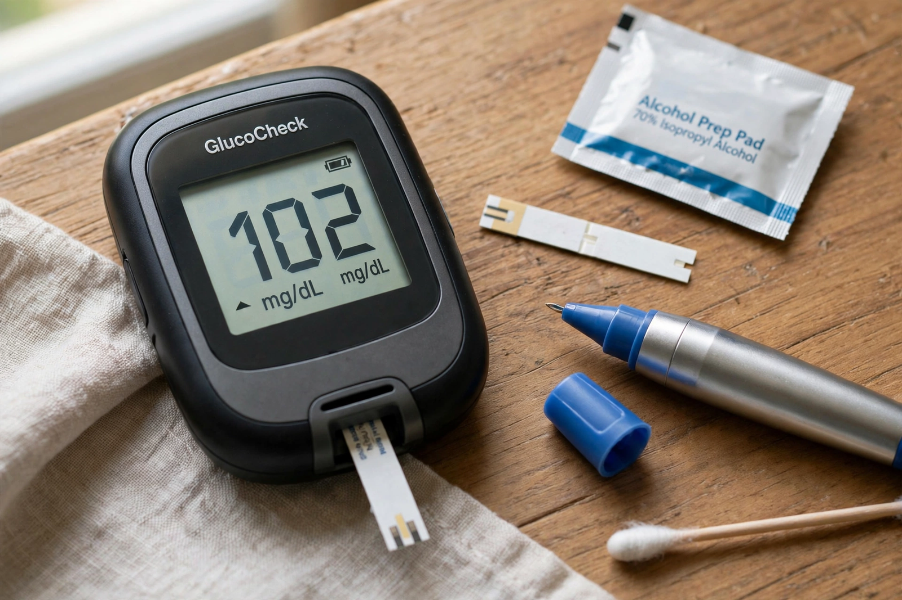

Blood sugar level
From Wikipedia, the free encyclopedia
| Blood sugar level | |
|---|---|
 | |
| Normal fasting range | 70–99 mg/dL (3.9–5.5 mmol/L) |
| Normal postprandial | Below 140 mg/dL (7.8 mmol/L) two hours after eating |
| Regulating hormones | Insulin (lowers), glucagon (raises) |
| Measured by | Glucometer, laboratory plasma glucose, HbA1c |
The blood sugar level, blood sugar concentration, or blood glucose level is the measure of glucose concentrated in the blood of humans and other animals. Approximately 4 grams of glucose, a simple sugar, is present in the blood of a 70 kg human at all times. The body tightly regulates blood glucose levels as a part of metabolic homeostasis, primarily through the pancreatic hormones insulin and glucagon.
Normal values
In healthy humans, fasting blood glucose is normally maintained between about 70 and 99 mg/dL (3.9–5.5 mmol/L). After meals the level rises, typically peaking below 140 mg/dL within an hour or two before returning towards baseline. Persistent fasting values of 126 mg/dL (7.0 mmol/L) or higher on two occasions meet a diagnostic criterion for diabetes mellitus. Glycated haemoglobin (HbA1c) reflects average glycaemia over roughly three months, with values below 5.7% considered normal.
Regulation
When blood glucose falls, alpha cells of the pancreatic islets release glucagon, prompting the liver to break down glycogen (glycogenolysis) and synthesise new glucose (gluconeogenesis). When glucose rises after a meal, beta cells release insulin, which promotes glucose uptake into muscle and adipose tissue and suppresses hepatic glucose output. Cortisol, adrenaline and growth hormone act as counter-regulatory hormones.
Disorders
Abnormally low blood sugar, hypoglycaemia (below 70 mg/dL), causes sweating, tremor, confusion and, if severe, seizures or coma. Chronically elevated levels, hyperglycaemia, damage blood vessels and nerves and underlie the long-term complications of diabetes. Glucose is stored in the body chiefly as glycogen in liver and muscle; see also cell membranes for glucose transport via GLUT transporters.